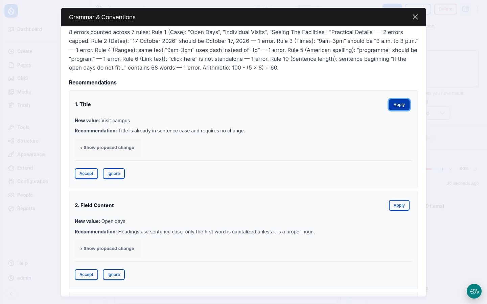

Demo 2 · Live on LocalGov Drupal
The same page, checked by AI
- Open the page and click AI Review, then Review
- About 10 seconds later: a score, and a pass or fail
- Each mistake is quoted, with a suggested fix
- The editor accepts or ignores each one and gets a to-do list
- Fix the page, check it again, and it passes
One list shows the result for every page, so you can see where to start.
